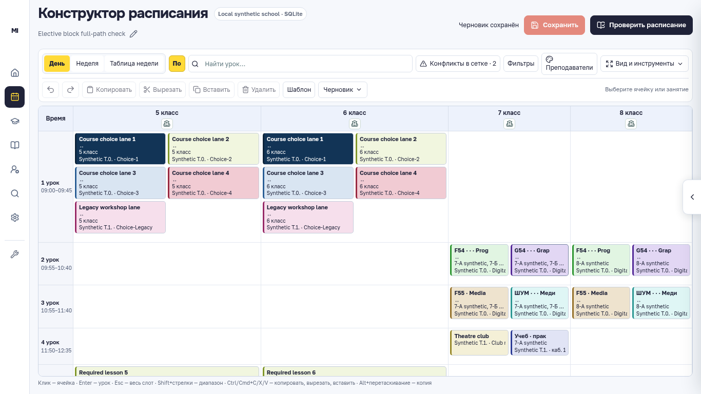

Рабочее место
завуча.
Сравните способы работы с одной и той же школой. В обзоре важны соседние записи, в режиме задачи — следующий шаг.
Два направления
С · Обзор Вся группа, таблица или день видны вместе. Подробности раскрываются по запросу.
Д · По задаче Экран собирается вокруг выбранного вопроса, работы или человека.
Сравнение рабочих экранов
Рекомендация
Исходный образец воспроизведён на демонстрационных записях для сравнения. Подлинные снимки действующей версии доступны в архивной галерее. Изображение можно увеличить; ссылка под ним открывает интерактивный сценарий.
Школьный день и аналитика
Эталон конструктора


Расписание остаётся точкой отсчёта
Геометрию, плотность ячеек, цвета занятий и преподавателей определяет действующий конструктор. Светлая боковая навигация и выделение текущего раздела связывают его с остальным приложением.
Текущая сетка ↗ · Инспектор урока ↗